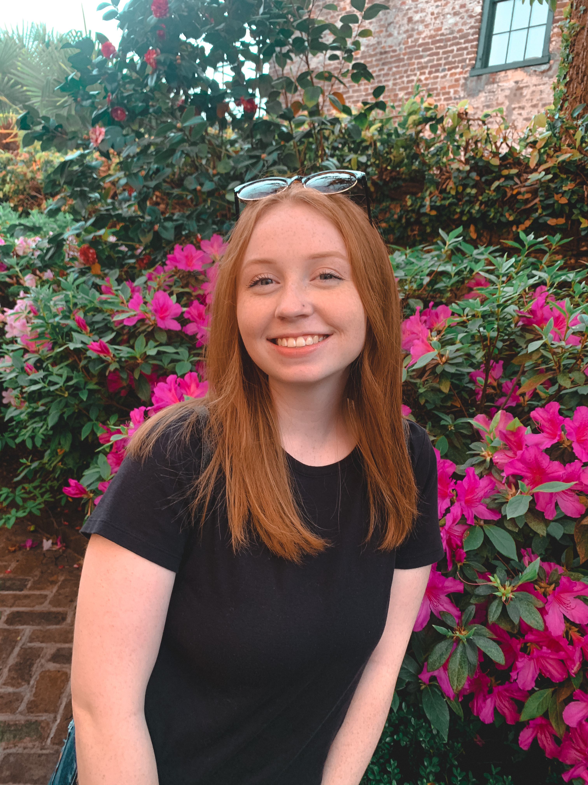

Who is Maddison?
Hi, my name is Madison! I am an avid reader and love sharing my thoughts on books. I've loved reading most of my life but really got into it about 2 years ago. Now I'm always reading and trying to convince my friends that they need to read the book I just finished. It's hard to narrow down my favorite books but some of them are Serpent & Dove by Shelby Mahurin, Red, White, & Royal Blue by Casey McQuiston, and The Wife Upstairs by Rachel Hawkins. If you ever want more recommendations, want to know what I'm reading, or even my thoughts on books I've read check out my bookstagram @reading.with.mads.